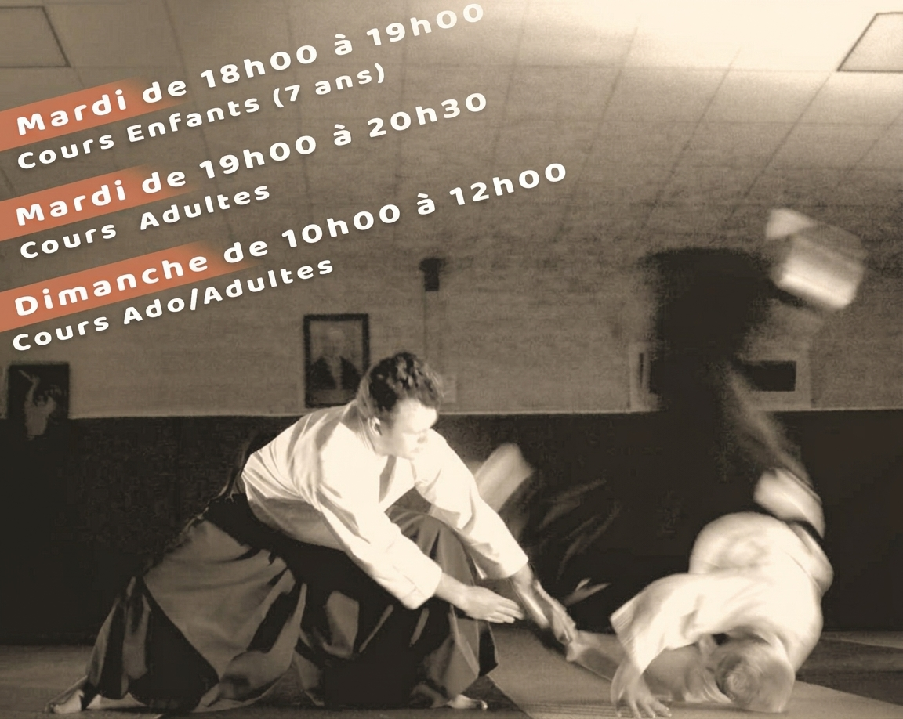
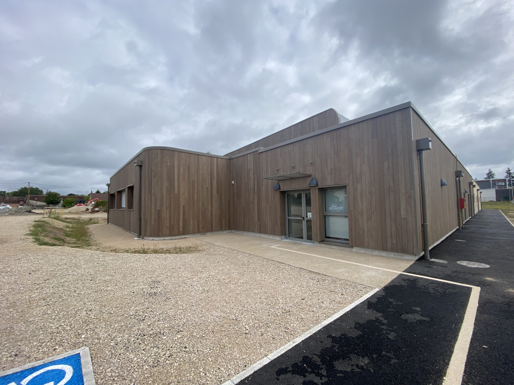

Harmonie
On travaille avec son partenaire, pas contre lui : l'attaque est accueillie et canalisée, sans chercher à détruire l'adversaire.
合気道 · Bracieux, Loir-et-Cher
L'Aïkido Club Bracilien vous propose de découvrir l'aïkido : un art martial qui consiste à canaliser toutes les formes d'attaque tout en préservant et en respectant son partenaire. Venez essayer, cours gratuit.


Fondé au XXᵉ siècle par Morihei Ueshiba, « O Sensei », l'aïkido est un art martial japonais qui se pratique à mains nues et avec armes de bois. Il met l'accent sur la technique, la sécurité et le bien-être.
On travaille avec son partenaire, pas contre lui : l'attaque est accueillie et canalisée, sans chercher à détruire l'adversaire.
Déplacements, équilibre, coordination et chutes en sécurité. Chacun progresse à son rythme.
La pratique permet de mieux se connaître et de mieux comprendre les autres, dans une ambiance détendue et conviviale.
Stages, démonstrations, portes ouvertes : retrouve ici les prochains rendez-vous du club.
Aucun événement annoncé pour le moment Suis le club sur Facebook pour ne rien manquer.
| Jour | Horaire | Public |
|---|---|---|
| Mardi | 18h00 – 19h00 | Enfants (dès 7 ans) |
| Mardi | 19h00 – 20h30 | Adultes |
| Dimanche | 10h00 – 12h00 | Ados et adultes |
Des cours pour les enfants et pour les adultes, ouverts aux débutants comme aux pratiquants confirmés.
Les cours ont lieu à Bracieux, au cœur de la Sologne, près de Chambord.
Contacte le club pour réserver ton cours gratuit et poser tes questions (tenue, tarifs, âge minimum…). Président : Didier Moreau.